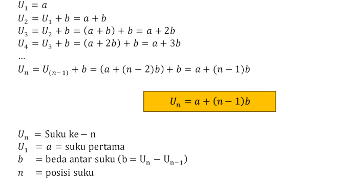
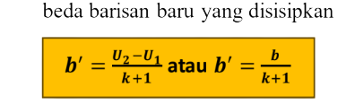
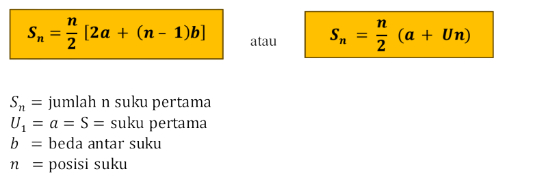

Deret
Lets belajar pola pola bilaangan aritmatika dan geometri.
Aritmatika
Tingkat 1
Barisan aritmatika adalah suatu barisan bilangan-bilangan dimana beda (selisih) antara dua suku berurutan
merupakan bilangan tetap..
- Rumus Suku ke-n
- Suku Sisipan Barisan
- Rumus Suku tengha
- Rumus Sn

Jika di antara dua suku U1dan U2 disisipkan k bilangan sehingga terbentuk barisan aritmatika baru dengan beda b′ maka U1, (U1 + b′), (U1 + 2b′), ..., (U1 + kb′),U2



Bertingkat
- Rumus Suku ke-n

Geometri
Barisan geometri adalah barisan yang memiliki perbandingan antara dua suku yang berurutan selalu tetap.
Perbandingan antar dua suku tersebut disebut rasio.
- Rumus Suku ke-n
- Rumus Suku Sisipan
- Rumus Suku tengah
- Rumus Sn


Iklan

Dibuat oleh Mikael Ernest Susanto IT3_24